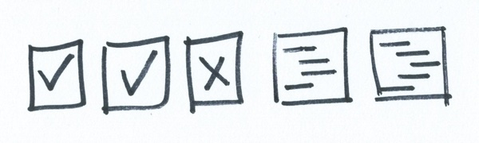

JavaScript code codex-js-checker
We want to use JS Hint to detect errors and potential problems (to make our code run properly), and JSCS to enforce a style guide (to make our code more readable).

We would also like these two things to happen automagically, and run whenever we save our code. The checker will tell us which line number of our code it found the problem, and what it thinks the problem is. We can do this, and see the results on the command line.
You can do this by installing something for each project (Beginner), installing some things globally, and running them for each file (Intermediate), or installing some things globally, and watching files (Advanced).